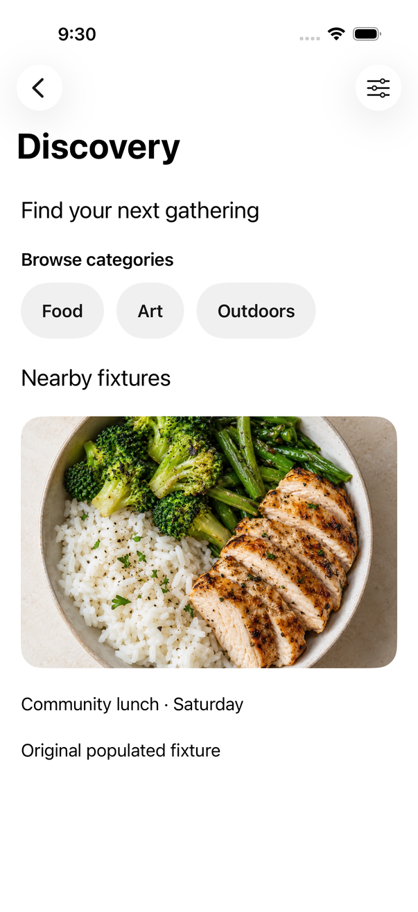
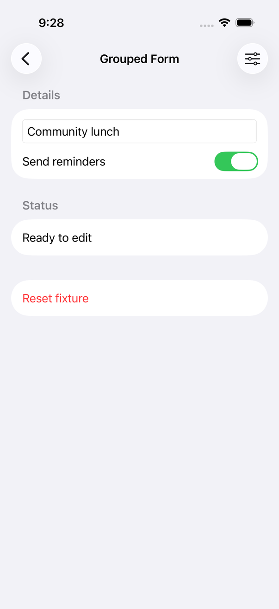
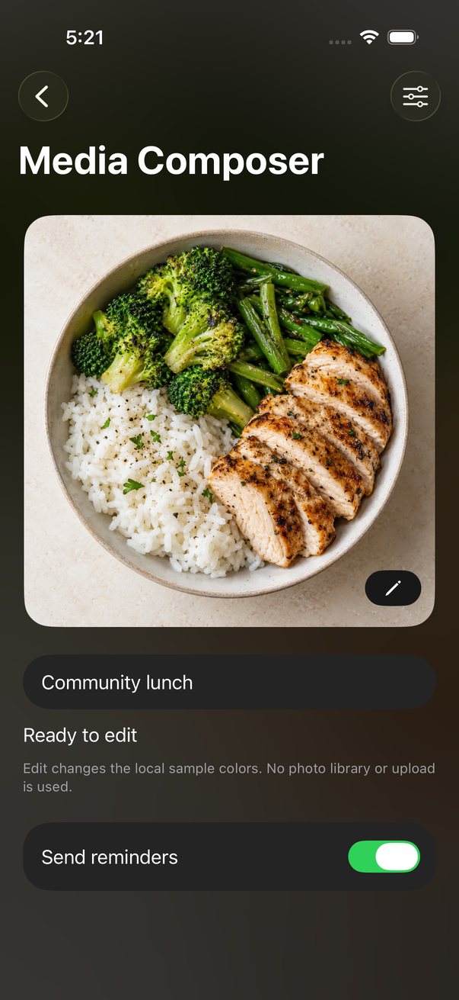
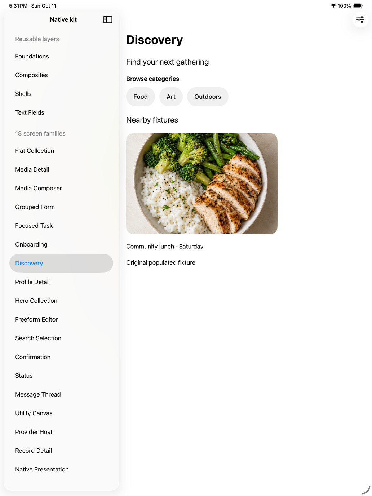
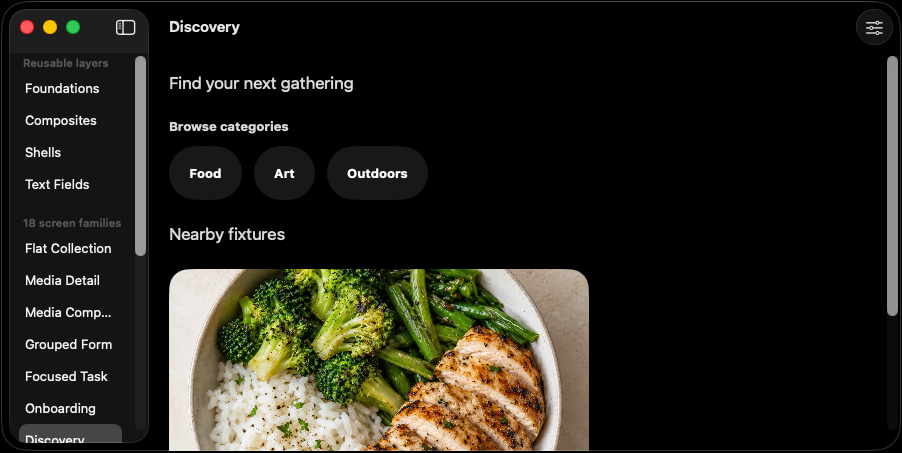

Soft corners.
Precise relationships.
Continuous image corners and genuinely concentric insets. Nested radii follow the actual padding, rather than a collection of unrelated values.
Read the corner contractNative SwiftUI · iPhone / iPad / Mac
Layered kit candidateOne considered design language.
Reusable layers. Unmistakably native.

A shared visual language
Images, surfaces, type, and actions share a system. Navigation, input, focus, and presentation stay native.
Continuous image corners and genuinely concentric insets. Nested radii follow the actual padding, rather than a collection of unrelated values.
Read the corner contractAn opt-in editorial style shares palette, typography, and metrics. System, light, and dark choices stay coherent across the app’s screens and presentations.
Explore the application styleCapsule styling follows the height of real buttons, including multiline labels. Your app owns actions, disabled state, routing, and data.
Explore ownership boundariesSwift Package Manager
The layered kit is a candidate, separate from main. Pin this source revision to evaluate the exact APIs and screenshots shown here.
Read the kit guideAlready using the core library? Keep the main quickstart.
.package(
url: "https://github.com/jangtrinh/design-os-apple.git",
revision: "adcf88a468a43ed1727c9c902ae5243423e4176e"
)
// Add this product to your app target:
.product(name: "DesignOSApple", package: "design-os-apple")Swift 6.2 and an Apple SDK are required to compile SwiftUI. No DESIGN:OS maintainer tooling is required by consumers.
A composition system
Begin with a semantic component. Reuse a composition. Choose the shell and screen type that fit your app.
Finite geometry, media clipping, and adaptive placement.
Meaningful media, identity, labeled values, and status.
Reusable groups with caller-owned content and action slots.
One clear container, scrolling, and safe-area policy.
Named task hierarchies assembled from the same lower layers.
42 additive public APIs, plus 4 native or existing-component recipes. Counts describe source in the candidate, not complete app flows. Inspect the machine-readable index.
This core example is kept in parity with Getting Started. It is not a demonstration of every candidate layer.
import DesignOSApple
import SwiftUI
struct AccountList: View {
var body: some View {
List {
DesignOSListRow {
Label("Profile", systemImage: "person.crop.circle")
} title: {
Text("Account")
} subtitle: {
Text("Manage identity and sign-in")
} trailing: {
Image(systemName: "chevron.forward")
.foregroundStyle(.secondary)
}
}
.designOSProfile(.default)
}
}Inside the kit
Selected native fixtures from the candidate’s family captures. Each demonstrates composition, rather than a fully reconstructed reference app.

Content-led browsing, media rows, and collection hierarchy.

Grouped form structures with clear field and action ownership.

Composer and form foundations with native input behavior.


iPhone, iPad, and Mac are tested separately. A compact phone screenshot is never treated as proof of a wide-screen adaptation.
Discovery · Flat collection · Hero collection · Media detail · Record detail · Profile detail · Media composer · Freeform editor · Grouped form · Search selection · Message thread · Onboarding · Confirmation · Status · Focused task · Utility canvas · Native presentation · Provider host
Explore the screen sourceA visible proof boundary
Evidence is bound to a revision. It describes this run, not a promise that every scenario or reference state is finished.
CalorieCam 10/10 and kit 9/9 on each of iPhone, iPad, and Mac. All eight jobs passed in CI run 38087127370.
108 family captures retained from native execution. The gallery selects from those artifacts; asset provenance records source filenames and transformations.
173 reported package tests, with the genuine high-contrast fixture skipped. Portable documentation checks complement, rather than replace, Apple SDK verification.
393 reference states mapped. This is a research inventory, not 393 completely rebuilt or visually accepted screens.
Before you build
Apple Design OS is a zero-dependency SwiftUI design system for iOS, iPadOS, and macOS. Its layered kit candidate adds reusable semantic components, composites, shells, and screen types while keeping native controls and application state in the consuming app.
The package requires Swift 6.2, iOS 17 or later, iPadOS 17 or later, and macOS 14 or later. It uses Swift Package Manager and has no external package dependencies.
The layered kit shown here is a candidate at revision adcf88a468a43ed1727c9c902ae5243423e4176e. Pin that revision to evaluate these APIs. The main branch quickstart remains available for the existing library. No version tag is claimed.
No. The research atlas maps 393 distinct reference states. The candidate contains 42 additive public APIs, three new internal primitives, and four native or existing-component recipes. Mapping and family-level screenshots do not establish complete reconstruction or visual acceptance of all 393 states.
CI run 38087127370 passed all eight jobs for candidate adcf88a: CalorieCam reported 10 of 10 UI tests and the kit 9 of 9 on each of iPhone, iPad, and Mac. The package reported 173 tests with the genuine high-contrast fixture skipped. Earlier intermittent activation failures remain unexplained. Live AI, physical camera, OS 27 and iPhone Duo execution, complete VoiceOver behavior, and performance are not established by this run.
The DESIGN:OS ecosystem
Independent tools for managing design intent, working in Figma, and publishing the work.